Le midi
Une formule de saison pour faire une vraie pause, sans quitter le quartier.
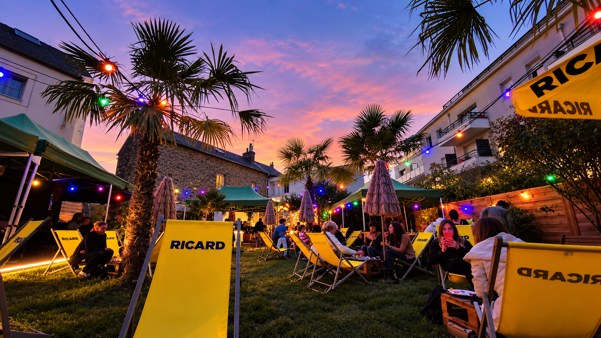
BAR · RESTAURANT · JARDIN
Un bistrot de quartier, un grand jardin caché, une cuisine conviviale et des soirées qui se prolongent.
L’esprit kermesse
Installée à Rennes depuis 2023, La Kermesse cache derrière sa façade un grand jardin arboré où l’on vient déjeuner, partager des tapas, boire un verre et profiter des rendez-vous de la maison.
Une adresse de quartier, avec juste ce qu’il faut d’évasion.
Le jardin caché
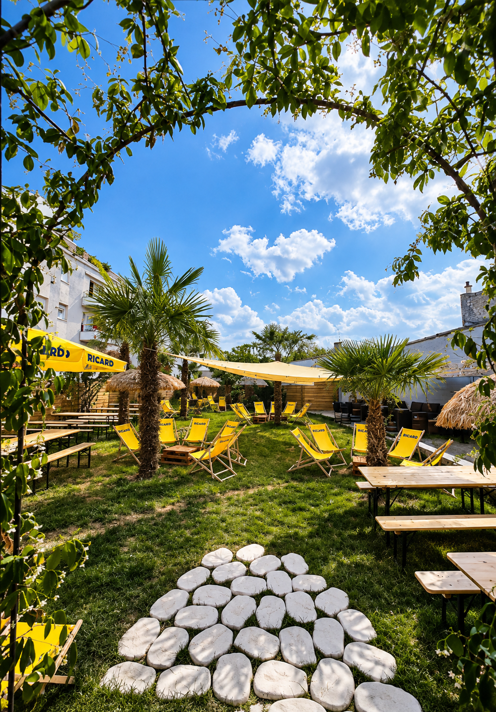
Palmiers, tables au soleil, transats et grands éclats de rire : le jardin est le cœur battant de La Kermesse. Une vraie respiration urbaine, à partager en famille ou entre amis.
Choisir sa parenthèse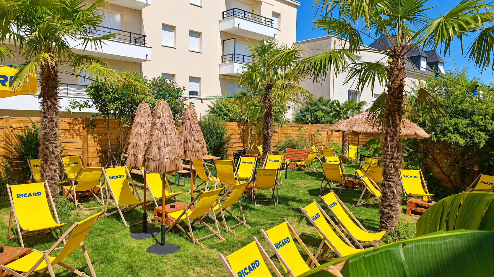
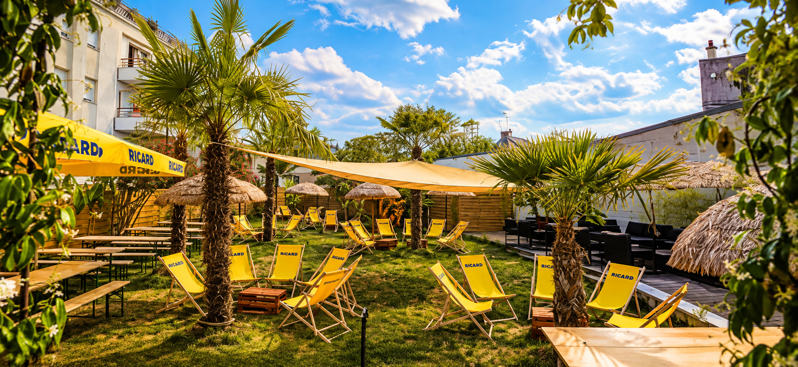
À table
Au déjeuner comme le soir, la cuisine accompagne les conversations : généreuse, sans détour, avec les produits et les envies du moment.
Une formule de saison pour faire une vraie pause, sans quitter le quartier.
Quand le jardin prend une autre lumière, on prolonge la table autour de tapas et de verres choisis.
Quelques assiettes, de la place pour tout le monde, et aucune raison de se presser.
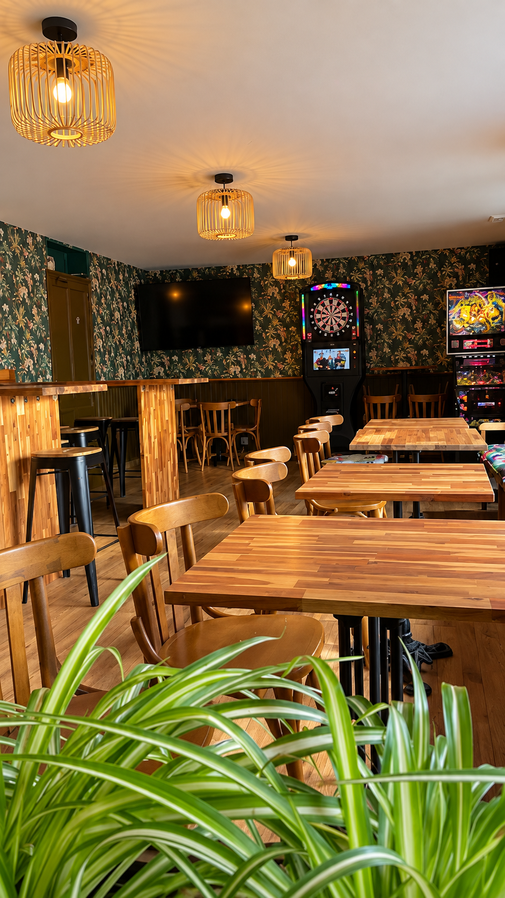
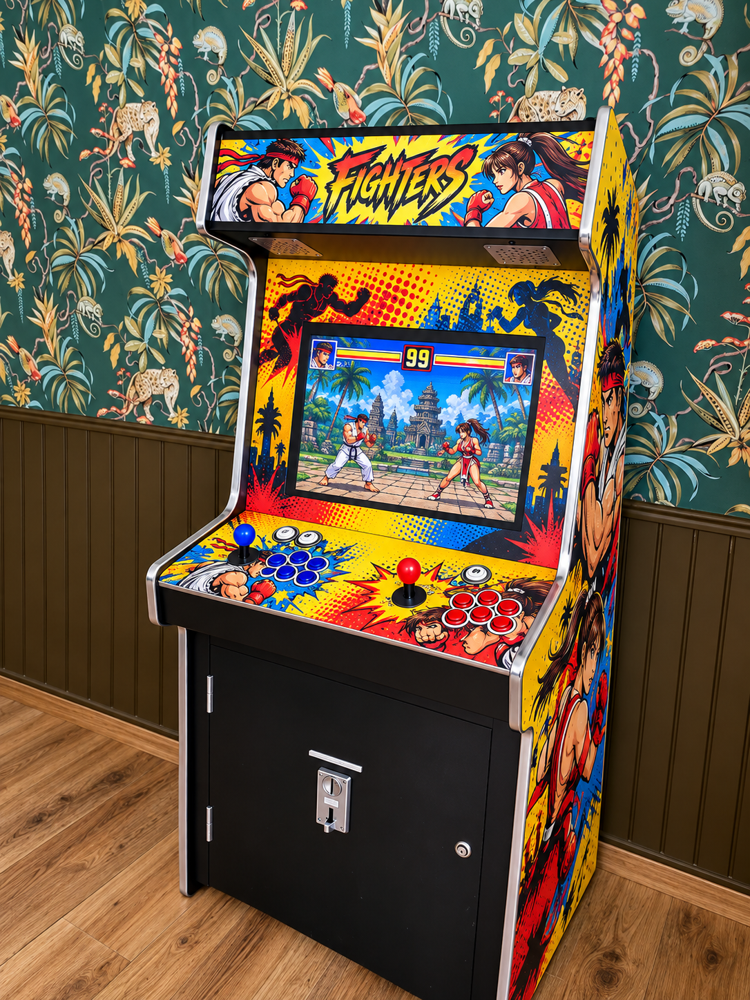
Même quand le ciel change
Le jardin est une évidence, mais l’intérieur a lui aussi son mot à dire : une salle chaleureuse, des jeux et une ambiance qui garde le sourire.
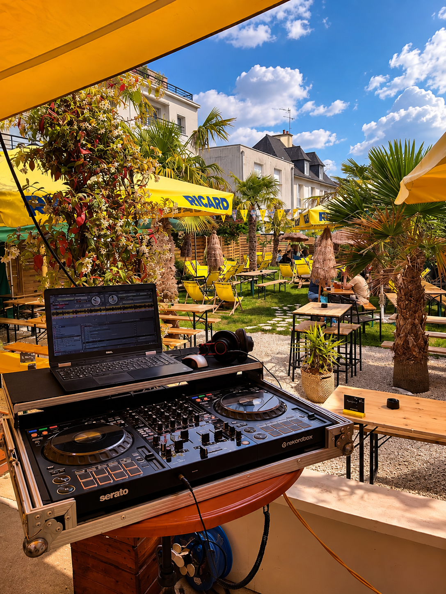
Quand le jardin s’anime
DJ sets, concerts, blind tests, stand-up, impro et soirées sport : La programmation évolue au fil des semaines.
Suivre les prochains rendez-vous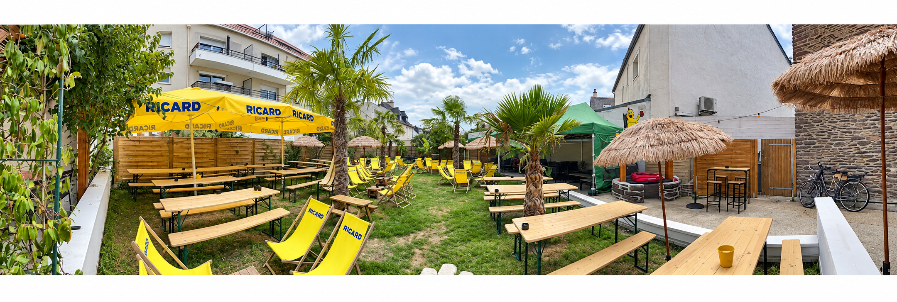
En images
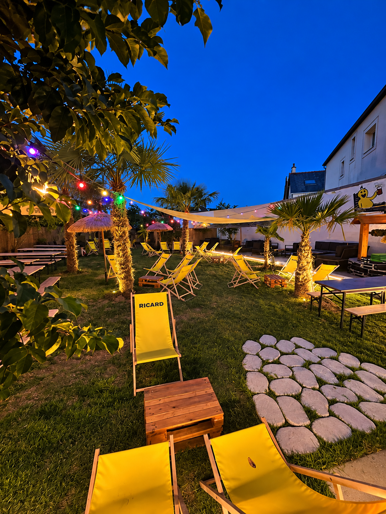
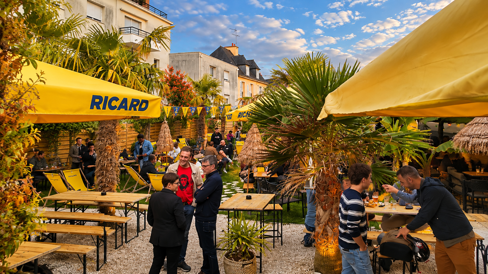
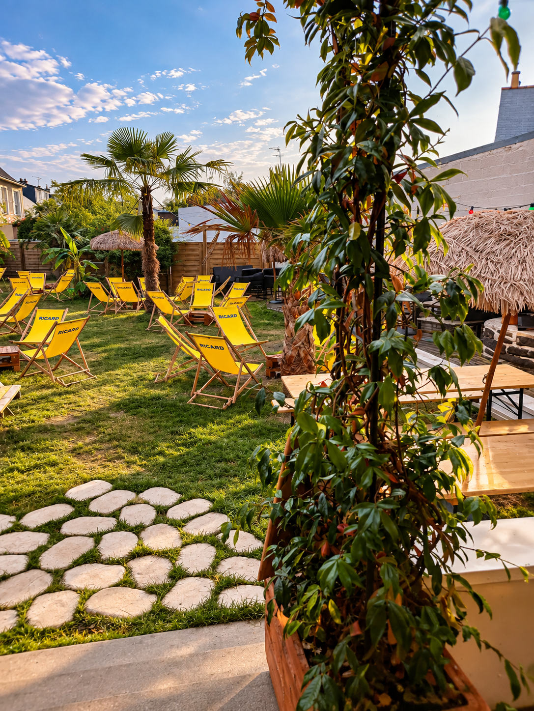
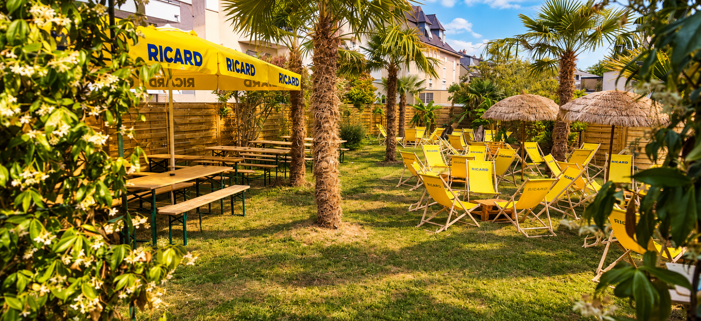
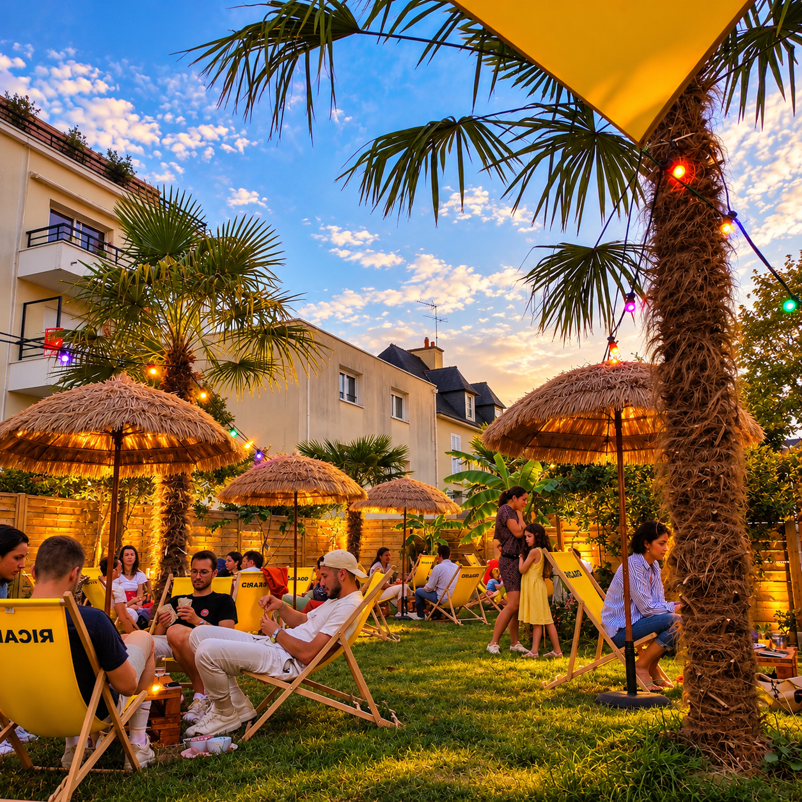
On vous garde une place ?
Réservez votre moment à La Kermesse.
Venir à La Kermesse
Horaires — à confirmer
Le point de départ